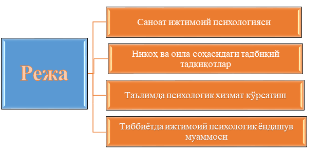

1-Режа. Саноат ижтимоий психологияси
Саноат ёки индустриал ижтимоий психология ҳозирги кунларда тадбиқий илмий тадқиқотларнинг етакчиси бўлиб келмоқда. Бу йўналишдаги тадқиқотлар ҳам асосан АҚШ да кўплаб ўтказилган бўлиб, уларнинг натижалари кенг амалиётга тадбиқ қилиниши натижасида саноатда инсон омилининг роли масаласи ўарб мамлакатларида анчагина яхши йўлга қўйилган.
Саноат ижтимоий психологияси йигирманчи асрнинг 60- йилларида кенг ривожлана бошланди. Бу хусусда социологлар В.А.Ядов, А.Г.Здравомислов, В.П.Рожин, Е.С.Кузьмин ва бошқаларнинг ишларини алоҳида таъкидлаш мумкин. Бу тадқиқотлар ва изланишларда олимлар асосан ишлаб чиқариш муҳитининг ҳамда хар бир ишлаб чиқариш корхоналаридаги катта ва кичик бирламчи ва иккиламчи, контакт ва контакт бўлмаган гуруҳларниинг шахс онгига таъсирини, ишга мотивация, самарадорликни таъминловчи психологик омилларни ўрганишган.
Бу тадқиқотларда ишлаб чиқаришнинг самарадорлигида алоҳида шартшароитларидан кўра инсонлар ўртасидаги муносабатлар, бошлиқ ва ходимлар ўртасидаги алоқалар, умуман, инсон омилининг нақадар катта роль ўйнаши исбот қилинган. Уларда ўша ўттизинчи йилларда Мэйо томонидан амалга оширилган машҳур ''Хоторн" экспериментларида қўлга киритилган асосий хулосалари ўз исботини топди.
Ҳозирги бозор иқтисодиёти шароитида ҳар қандай ишлаб чиқариш муаммосининг ижтимоий психологик томонини аниқлаш кун тартибидаги асосий масалалардан эканлиги ҳеч кимга сир эмас. Чунки янгича бозор муносабатларини амалга оширадиганлар алоҳида шахслар бўлиб, уларнинг индивидуал ҳамда гуруҳдаги установкалари, фаолликлари, меҳнатга муносабатлари, ҳиссиётлари етакчи роль уйнайди.
Корхоналарнинг мустақиллиги, хусусий мулкчиликнинг турли формалари ҳаётга шиддат билан кириб келаётган бугунги шароитда ҳам одамлар гуруҳ бўлиб меҳнат фаолиятини амалга оширар эканлар, улар учун ўша гуруҳдаги ижтимоий психологик муҳитнинг қандайлиги, бевосита раҳбарнинг обрўйи, норасмий лидерларнинг ишга ва шахслараро муносабатларга таъсири актуал масала бўлиб қолаверади ва уларнинг характери ишлаб чиқариш самарадорлигига бевосита таъсир кўрсатади.
Янгича бозор иқтисодиёти муносабатлари шароитида раҳбарлар олдида турган яна бир муҳим масала шуки, улар аввалгидан ҳам билимдонроқ бўлиб, билимларини кўпроқ ҳар бир шахснинг индивидуал психологик лаёқатлари ва қобилиятлари, ишга муносабатларига қараб, уларни тақдирлашлари, ишга жалб этишнинг турли-туман формаларини топишлари зарур.
Ходимми, ишчими уни шахсан ўрганиб, ҳар бир қилган ишини муносиб тақдирлаш эса (хоҳ моддий, хоҳ маънавий тақдирлаш бўлсин) унинг қисман тест ўтказадиган мутахассис ёки психолог бўлишини, ҳозирги замон психологиясининг оммабоп усулларини қўллаган ҳолда иш юритишини талаб қилади. Ишни ташкил этиш, гуруҳларни шакллантиришда хам у гуруҳлар психологияси қонунларини билиши, одамлар сони ва сифати масаласида ижтимоий-психологик жиҳатдан билимдон бўлиши шарт.
Ҳозирги кунгача ўтказилган кўплаб тадқиқотлар натижасида олимлар саноат корхоналари структурасидаги ишга халақит берадиган айрим қийинчиликларни аниқлашган. Хусусан, уларга қуйидагилар киради:
а) корхоналардаги ишлаб чиқариш гуруҳларидаги одамлар сонининг ҳар хиллиги – 5-6 кишидан тортиб, 100 ва ундан ортиқ кишигача. Бундай ҳар хил гуруҳларда таққослаш йўли билан тадқиқот олиб бориш ва бирининг натижасини иккинчиси ёйиш мумкин эмас;
б) бирламчи ишлаб чиқариш гуруҳларидаги раҳбарлар мавқеининг турлича эканлиги, яъни смена устасидан тортиб, завод директоригача бўлган раҳбарлик тизими ўрганиладиган бўлса, уларнинг хақ-ҳуқуқлари, имкониятлари, амалидан келиб чиқадиган хуқуқлари ҳар хил бўлгани учун ҳам уларнинг реал гуруҳлардаги мавқеи, таъсири ҳар хиллиги маълум булди. Бу нарса раҳбарларга турлича талаблар тизимини ишлаб чиқишини талаб қилади;
в) баъзан, бирламчи ишлаб чиқариш гуруҳларида биттадан ортиқ раҳбар бўлиши мумкин. Масалан, смена мухандиси ва цех бошлиғи, агар уларнинг раҳбарлик усуллари турлича бўлса, бу ҳам мухим ижтимоий-психологик омил сифатида ишнинг сифатига таъсир кўрсатади;
г) турли корхоналар ҳозирда турлича жамиятлар (акционерлик кооператив, давлат хўжалиги, хусусий ва шунга ўхшаш) шаклида иш юритаётганлиги ҳам ҳар турли корхоналар психологик тузилишини ўрганишни талаб қилмокда.
Буларнинг хаммаси социал психологик тадқиқотларни ташкил қилишда қатор қийинчиликлар туғдириши, қўшимча ишларни талаб қилиши табиий. Ҳозиргача, саноат ижтимоий психологияси йўналишида олиб борилган кўп ишлар саноат бирлашмаларидаги алохида ишлаб чиқариш гуруҳларидаги ижтимоий-психологик муҳитни ўрганишга қаратилган бўлиб, тадқиқот мобайнида унинг ишлаб чиқаришнинг самарадорлиги, ишчиларнинг ишга муносабатлари, гуруҳдаги нормаларга бўйсунишлари ва ҳоказолар билан боғлиқлиги ўрганилган.
Айниқса, кўп тадқиқотларда ана шу психологик феноменнинг раҳбарликка таъсири, норасмий лидерларнинг сифатларига боғлиқлиги масалалари тўлиқ ўрганилган. Лекин шу йўналишдаги тадқиқотлар ҳозирги иқтисодий муносабатлар шароитида ўтказилгани йўқ.
Шунинг учун ҳам яқин келажакда ижтимоий психологлар томонидан саноат корхоналарида ўтказилиши мумкин бўлган тадкиқот аспектларига қуйидагиларни киритишимиз мумкин:
1) жамоа аъзолари ўртасидаги вертикал ўзаро муносабатларни ўрганиш раҳбарлик масалалари, раҳбарнинг жамоа аъзолари томонидан идрок қилиниши ва аксинча, ҳар бир аъзонинг раҳбарликда иштироки, ундан қониқиши ва бошқалар
2) жамоа аъзолари ўртасидаги горизонтал ўзаро муносабатлар, яъни жамоанинг уюшганлиги, шахслараро муносабатларнинг ўзига хослиги зиддиятлар ва уларнинг типлари, уларнинг олдини олиш чоралари; меҳнатга муносабат, ундан жамоа аъзоларининг қанчалик қониқишлари ва унинг меҳнат унумдорлигига таъсири, иш мотивлари ва ҳоказо.
Тадқиқотчини юқоридаги ана шу масалалани ўрганиши учун, табиий, методик воситалар зарур.
Профессионал ижтимоий психолог оддий кишидан шуниси билан фарқ қилалики, у ҳар бир конкрет шароитда ўзига керакли, маъқул методик услубларни қўллайди, баъзи бирларини синаб кўриб, агар мақсадга мувофиқ бўлмаса, бошқаси билан алмаштиради. Олинган натижаларига асосланиб туриб, у корхоналардаги руҳий муҳитни ''яхши", ''ўртача", ''ёмон", ''қарама-қарши" типларга бўлади ва ҳар биридан ўзига яраша илмий кўрсатмалар ва хулосалар чиқаради.
2-Режа. Никоҳ ва оила соҳасидаги тадбиқий тадқиқотлар
Оила ва никоҳ ҳамма вақт ҳам гуманитар фанларни қизиқтириб келган соҳа. Айниқса, бу соҳанинг ижтимоий психология учун ўзига хослиги бор. Чунки, ижтимоий психология оилани ўзига хос ижтимоий гуруҳ сифатида текшириб, унда содир бўладиган барча руҳий жараёнларни ўрганади. Республикамизда сила ва никоҳ масалаларига эътиборнинг катталиги ҳисобга олиб, кўпчилик тадқиқотчилар ўз илмий изланишларини ана шу муаммоларга багишлаганлар (М.Мирхосилов, Ғ.Б.Шоумаров, В.М.Каримова, М.Расулева, С.Соғинов, У.Маҳкамов ва бошқалар).
Оилага бўлган илмий қизиқишнинг сабаблари аввало бу объектнинг ''нақдлиги" бўлса, иккинчи томондан, охирги йилларда, ҳаттоки бизнинг республикамизда ҳам ажралишларнинг кўпайганлиги, туғилишнннг шаҳар ва қишлоқларда бир текисда эмаслиги, ''муаммоли" оилаларнинг кўпайиб бораётганлиги, оила институтига ёшлар муносабатларининг ўзгариб бораётганлиги ва бошқалардир.
Умуман олганда, бизнинг худудимизда ҳам оила-никоҳ муносабатлари йил сайин ўзгариб бормоқда. Бу борада ўзгаришларга:
1) оиланинг жамият олдидаги функцияларининг ўзгариб бориши;
2) оила аъзолари сонининг ва туғилишнинг камайиши, мураккаб кўп оилали типдан, алоҳида мавжуд бўлган алоҳида оилалар типига айланиб бораётганлиги;
3) оилавий муносабатлар тизимида эр ва хотин функияларининг ўзгариб, оилавий роллар ҳақидаги ижтимоий тасаввурларнинг ўзгариб бораётганлиги;
4) иқтисодий инқирозларнинг оила аъзолари ўртасидаги муносабатларга таъсири;
5) аёллардаги репродуктив установкаларнинг ўзгариб бораётганлиги кабиларни киритиш мумкин. Бу айтиб ўтилган соҳалар Ўзбекистон шароитида шу яқин кунларда ишланиши керак бўлган муаммолар бўлиб, уларнинг ечимига кўра оилани режалаштириш, оилада болалар тарбияси, аёл ва эркаклар меҳнатига муносабат кабилар бўйича олимлар ўз фикрларини айтишлари керак.
Оила ва никоҳ борасида ўтказиладиган тадқикотларда жаҳон ва ҳамдўстликдаги давлатларда ўтказилган изланишлар, улардан олинган натижалар ва методикалардан фойдаланиш мумкин. Айниқса, Санкт Петербург, Болтиқбўйи республикаларида оила масалаларига бағишланган тадқиқотлар кўплаб ўтказилган бўлиб, уларнинг тажрибасидан биз ҳам кенг фойдаланишимиз керак.
Чунки бу худудларда рўй бераётган кўплаб ижтимоий жараёнлар, хусусан, оилавий муносабатлар борасидаги муаммолар бизнинг жумҳуриятимизга ҳам тааллуқлидир. Масалан, аёлларнинг ижтимоий меҳнатда бандлиги туфайли уларда оила, унда хотин кишининг ўрни, роли ҳақидаги тасаввурларнинг ўзгаришининг ўзи бутун психологияни қайта қурилишига сабаб бўлмоқда.
Лекин, иккинчи томондан, демократия ва эркинлик шароитида йиллар давомида тақиқланиб келган эски кадриятларимиз, биринчи навбатда, диннинг ҳаётга кириб келиши, умуман оилавий муносабатларга шундай таъсир кўрсатмоқдаки, кўпчиликда ''энди аёл киши анъанавий ўз ўрнини эгаллармикин?" деган тасаввурлар ҳам пайдо бўлмоқда.
Аммо, ҳозирги ривожланган ижтимоий-иқтисодий муносабатлар шароитида моддий ишлаб чиқаришни хотин-қизларсиз тасаввур қилиб бўлмайди. Шунинг учун ҳам илмий тадқиқотлар одамлар онгидаги ана шундай қарамақаршиликларнинг психологик ечимини топган ҳолда оила ва никоҳ тизимига психологик ёрдам кўрсатиши зарур. Шаҳарларда ва йирик аҳоли пунктларида ''оила хизмати" шоҳобчаларини ташкил этиш зарурки, улар бир томондан, оила ва никоқ борасидаги илмий муаммоларни тадқиқ қилиб, уларни ҳаётга тадбиқ қилса, иккинчи томондан, ёшларга, оиласиз одамларга, зиддиятли оилаларга бевосита психологик хизматлар кўрсатиши керак.
Оилавий муносабатлар соҳасидаги алоҳида тадбиқий тармоқ бу ёшларни оилавий ҳаётга тайёрлашдир. Бу иш бизнинг ўлкамизда ҳам алоҳида аҳамиятга эга бўлиб, янгилик билан эскилик қарама-қарши келаётган шароитларда айниқса муҳимдир. Ўсмирлик ва ўспиринлик йилларида шаклланадиган аттракция ҳодисаси, яъни шахсларнинг бирбирларига эмоционал боғланишлари - дўстлик, севги ҳисларини тарбиялаш, ана шундай тарбияга шарт-шароитлар яратиш бизнинг ўрта Осиё шароитларимизда янги ва келажаги порлок соҳалардандир.
Бу ишларни амалга оширишда мактаб психологлари, педагоглар, ижтимоий психологлар ҳамкорликда ишласалар, олинган хулоса ва натижаларни ҳаётга тадбиқ этса бўлади.
3-Режа. Таълимда психологик хизмат кўрсатиш
Маълумки, шахснинг социализацияси асосан таълим-тарбия масканларида амалга ошади.
Шунинг учун ҳам таъим масканлари орасида: оила, боғча, мактаб, лицей, коллеж, олийгоҳ олдига қўйилган асосий вазифалардан бири шахснинг камолоти учун барча шароитларни яратиш, унинг индивидуал ва психологик хусусиятларини ҳисобга олган ҳолда таълим ва тарбиянинг энг мақбул шаклларини жорий этишдир.
Охирги йилларда Ўзбекистон Республикаси кўрсатмаларига асосан ёшларнинг лаёқатларини илк ёшлигидан аниқлаш, улар иқтидорини ҳар тарафлама ўстириш вазифалари шахсга индивидуал ёндашувнинг зарурлигини, ўқишнинг дифференциал бўлишини талаб қилмоқда, шунга яраша мактаб ва жамоатчилик олдига қатор муаммоларни келтириб чиқармоқда.
Тестлар воситасида билимларни текшириш, олий ўқув юртларига ва таълимнинг барча тармоқларига ҳам тест синовлари орқали қабулнинг амалга оширилиши психологик хизматнинг тезроқ йўлга қўйилишиии талаб қилмоқда.
Ижтимоий психология ҳам давримизнинг таълим масканлари олдига қўяётган талаблари, унинг ҳозирги кунларда бошдан кечираётган қийинчиликларни ҳисобга олган ҳолда, ўз олдига:
а) уларни англаш;
б) илмий анализ қилиш;
в) олдини олиш йўлларини қидириш;
г) йўл-йўриқлар кўрсатиш вазифасини қўймоқда.
Бу борада ижтимоий психолог нима ишларни қилиши мумкин?
1. Жойларда ташкил этилган психология хизмати, аввало психологдан ўша таълим маскани шароитини ҳар томонлама, тўлиқ ўрганиб чиқишни, ҳар бир ёш хусусиятларига қараб, индивидуал ва гуруҳда ишлаш услубларини аниқлаши лозим.
2. Психолог шахс ўртасида учраб турадиган психик ривожланишдан чекиниш ҳолларини тўлиқ ўрганиши, унга сабаб бўлган ижтимоийпсихологик шарт-шароитларни анализ қилиши лозим.
3. Психологда турли ёшли шахс бўйича уларнинг қобилиятлари, йўналиши, лаёқатлари ва касбга қизиқишига доир аниқ илмий анализлар, тест натижалари асосида тузилган маълумотлар бланки бўлиши керак. Бу маълумотларга асосланиб, психолог хар бир шахсга алоҳида-алоҳида ёндашиш, айримларига қўшимча дарслар ташкил этиш шахсдаги қобилиятларни ўстириш билан боғлиқ аниқ кўрсатмалар ишлаб чиқмоғи лозим.
4. Таълми масканларидаги алоҳида синфлардаги руҳий ҳолатларни, ўзаро муносабатлар билан боғлиқ бўлган психологик муҳитни аниқлаши ва расмий ва норасмий лидерлар ўртасидаги муносабатларни чуқур ўрганиб, маъмуриятга керакли йўл-йўриқларни бериб туриши керак.
5. Бундан ташқари, психолог турли можаролар, зиддиятлар, тартиббузарликларнинг олдини олиш, уларнинг табиатини ўрганиш чоратадбирлари бўйича консультациялар ташкил этиши керак. Бундай консультациялар алоҳида ота-оналар ва педагоглар жамоаси учун ташкил қилинади. Амалий психолог фаолиятининг яна бир томони турли масалалар бўйича ўқитувчилар жамоасига консультация ва ёрдамлар беришдир.
Юқоридаги вазифалардан келиб чиқиб, диагностик ва тузатиш ишлари (ҳар қандай ривожланиш жараёнидаги чекланишлар, орқада қолиш ҳолатларини аниқлаб, чорасини топиш, улар олдини олиш); психопрофилактик ишлар (психогигиена, боланинг психологик жиҳатдан нормал ривожланишини таъминловчи шароитлар яратиш); психологик консультациялар, ўкитувчилар, ота-оналар ва ўқувчиларнинг психологик саводхонлигини кўтариш; психолог қўллайдиган методларни конкрет шароитларга мослаштириш, улардан самарали фойдаланиш, тўпланган илмий маълумотларни системали тарзда анализ қилиб бориш; тестлар тузиш, уларнинг сезгирлигини илмий асослаш ва ҳар бир бола қобилиятини, қолаверса, ўқитувчилар билимдонлигини тестлар ёрдамида мунтазам текшириб, илмий хулосалар ва кўрсатмалар тайёрлаш кабилардан иборатдир.
Ўйлаймизки, республикамизда таълим масканларида психологик хизмат кўрсатиш ишларини такомиллаштириш келажагимиз бўлган болаларимизни жамият олдида турган улкан ва улуғвор ишларга тайёрлашда ўзининг муносиб ҳиссасини қўшади.
Умуман жамиятнинг психология фани олдига қўйган талаблари кўп. Уларни қондириш учун жумхуриятимизда аввало кенг илмий-тадқиқот ишларини ривожлантириш, уларнинг натижаларини дадил амалиётга тадбиқ қилиш даври келди. Амалиёт билан назария ўртасидаги боғлиқлик ҳар бир илмий ғояни ҳаётга тадбиқ қилиш психологлар олдида турган асосий вазифалардандир.
4-Режа. Тиббиётда ижтимоий психологик ёндашув муаммоси
Охирги йилларда ижтимоий психология билан одамларнинг саломатликларини муҳофаза қилувчилар, тиббиёт ходимларини ўртасидаги алоқалар ҳам кучаймоқда.
«Саломатлик психологияси» деб номланувчи бўлим пайдо бўлдики, у ўз бошидан турли тангликларни кечирган, ёлғиз ва серхавотир одамларнинг руҳий холатлари, кутишлари ва муносабатларини ўрганмоқда.
Масалан, олимларнинг текширишларига кўра, ўзида депрессия - танглик холатини бошидан кечираётган одамнинг ўзи хақидаги фикрлари ҳам салбий бўларкан. Нормал одамларга нисбатан улар тушунтиришларида ўзларини ёмон баҳолаб, воқое-ходисалар орасида ҳам фақат ёмонларини эслаб, келажакка ишончлари ҳам кам бўлади. Улар фикрлашлари одатда депрессив тафаккур деб аталади.
Шунга ўҳшаш холатлар ёлғиз қолган одамлар ва бурли вазиятлар оқибатида стресс холатига тушиб қолганларга ҳам хосдир. Психология бу борада уларга ижтимоий муҳитга аралашиш, кутишлар тизимини ўзгартириш ва ўзига муносабатни ижобийлаштириш учун тренинглардан ўтишни тавсия этади. Бунда асосан уч тамойилга бўйсуниш керак бўлади:
v ташқи хатти-харакатлардаги ўзгаришлар ички дунё ва фикрлашни келтириб чиқаради;
v хулқдаги ижобий малакаларнинг пайдо бўлиши ижобий тажрибага асос бўлади ва бу орқали одамнинг ўзини ўзи идрок қилиши ўзгаради, оқибатда негатив фикрлаш ҳам чекинади;
v даволаниш масканларида соғлиғини тиклагандан сўнг агар одам бу холатни докторларнинг даволаш дастурларидан эмас, балки ўзидаги ички руҳий омиллар туфайли рўй берди, деб хулосаласа, даволаниш самараси узоқроққа чўзилади.
Юқоридаги фикрлардан келиб чиқиб шуни қатъий таъкидлаш мумкинки, тиббиёт ходими ёки шифокор албатта психологияни яхши билиши, айниқса, унинг тармоғи бўлган ижтимоий психология асосларини билиши зарур.
Бу нарса нафақат касалликларнинг келиб чиқиши, негизи психоген омиллар таъсирида бўлишидан, балки шифокор ва касал одамларнинг ҳам бири ўзига хос шахслар бўлиб, улар ўртасидаги бирбирини идрок қилиш, тушуниш ва таъсир кўрсатишлари турли шароитларда турлича кечиши билан изоҳланади.
Ҳаётий кузатишлар шуни кўрсатадики, малакали шифокорнинг бир бемор билан амалга оширган муваффақиятли муолажаси, мулоқоти тажрибаси, бошқа шароитда бошқа беморлар билан самара бермаслиги ва бу нарса инсоннинг ёш, жинс, профессионал хусусиятларидан ҳам келиб чиқади.
Шунинг учун ҳам охирги йилларда масаланинг айнан шу психологик жиҳатларига – муомаладаги этика, эстетика ва халқ менталитети хусусиятлари, қадриятларга кўпроқ эътибор берилмоқда.
Зеро, айниқса, асаб бузилишларидан келиб чиқадиган ҳар қандай касаллик, масалан, неврозларинсон қалби ва унинг руҳий дунёсидаги қарама-қаршиликлар ва муаммолардан келиб чиқади.
Мавзу юзасидан қисқача хулоса:
Саноат ижтимоий психологияси. Саноат корхоналарида кузатиладиган холат асосида ишга салбий таъсир этадиган sийинчиликларнинг турлари ва уларни намоён бoлиш шартлари. Саноат корхоналарида кузатиладиган горизонтал ва вертикал ўзаро муносабатлар ва уларнинг психологик табиати.
Оила ва никоҳ соҳасидаги тадқиқот ишлари ва уларнинг ўзига хослиги муаммолари. Оила ва оилавий муносабатларга қизиқишнинг айрим жиҳатлари. Бу борада ўтказилаётган тадқиқотларнинг аҳволи. Аёлларнинг меҳнатга жалб этилиши ва ёшларни оилавий ҳаётга тайёрлаш масалалари.
Мактабда психологик хизматни ташкил этиш тажрибасидан. Мактаб муҳитидаги амалий психологнинг иш фаолиятидаги эътиборли томонлар ҳақида. Бундаги асосий йўналишлар: диагностик ва тузатиш ишлари, психопрофилактик ишлар, психологик консультациялар ва маънавий-оқартув ишлари.
Мавзу психологик маслаҳатни ва психологик хизмат турларини саноат, ишлаб чиқариш ва таълим масканларида ташкил этиш йўлйўриқларига қаратилган бўлиб, бу ҳар бир соҳада психологик ишларни олиб боришда кузатиладиган холатларни атрофлича англаб олишга ёрдам беради.
Назорат саволлари ва мустақил ишлар мавзулари:
1. Саноат ижтимоий психологияси.
2. Никоҳ ва оила соҳасидаги тадбиқий тадқиқотлар.
3. Мактабга психологик хизмат кўрсатиш.
Мавзу юзасидан ўқув топшириқ ва ижтимоий тренинглар
Ижтимоий муҳитга мослашув тренинги
Тренинг мақсади: талабаларнинг коммуникатив компетенциялари, янги ижтимоий муҳитга мослашиш малакаларини ривожлантириш. Ўзини қуршаб турган ташқи муҳит, атрофидаги воқеа-ҳодисалар моҳиятини тўғри англаш, ўзаро муносабатларга ижобий таъсирини кўрсата билиш, киришувчанлик қобилиятини ривожлантириш.
Кутилаётган натижалар:
1. Талабада янги ижтимоий муҳитдаги воқеа-ҳодисаларга нисбатан қизиқиш уйғотиш.
2. Тенгқурлари орасида янги дўстлар, ҳамфикрлар орттириш кўникмаларини ҳосил қилиш.
3. Масъулият ҳиссини шакллантириш.
4. Ўз ҳатти-ҳаракатларини назорат қилиш асосида самимий ва дўстона муносабатларни юзага келтириш.
5. Янги ижтимоий муҳитга мослашиш кўникмаларини ривожлантириш.
1-босқич: “Бирга саёҳат”
Савол: Агар сизга бинонинг атрофини бир айланиб келинг деб топшириқ берилса, айнан қайси томонни кўзлаган бўлар эдингиз?
Иштирокчиларга ўйлаш учун 2 дақиқа вақт ажратилади. Талабалар навбати билан ўз фикрларини баён этади. Фикрлари мос келган талабалар гуруҳларга бўлинадилар. Бўлинган гуруҳ аъзолари айнан ўзлари танлаган объект ҳақида изоҳ берадилар.
2-босқич: “ Ёнғин”
Гуруҳларга топшириқлар берилади. 1-гуруҳ ўз хонасида гугурт қутисини ўйнаб ёнғин чиқаради. Қолган гуруҳ аъзолари ёнғинни ўчириши керак. Шартга кўра ёнғин сабабчилари ёрдамга келган талабалар томонидан жазоланишлари керак.
3-босқич.
Барча иштирокчилар овоз чиқармасдан ўзи ёқтирган ўқитувчининг дарс ўтиш жараёнини кўз олдига келтиришлари керак. 2 дақиқадан сўнг 1 нафар иштирокчи чиқиб (ихтиёрий) пантомима орқали танлаган ўқитувчисининг ҳатти-ҳаракатларини кўрсатиб беради. Қолганлар эса уни кузатиб, кўрсатилган хатти-ҳаракатлар қайси ўқитувчига мос келишини топишлари керак. Тўғри топган талабага навбат берилади. Бу ҳолат бир неча бор такрорланади.
4-босқич.
Талабалар икки гуруҳга бўлинади ва 1-гуруҳ хонадан ташқарига чиқарилади. 2-гуруҳга формат қоғоз ва рангли қаламлар берилади.
Топшириқ: 5 дақиқа ичида ўзингиз таҳсил оладиган ўқув юрти биноси лойиҳасини қоғозга туширинг. Сўнг 1-гуруҳ таклиф қилинади. Уларга “Қоғозга ниманинг сурати туширилган?” деган савол берилади. Ўйлаш учун 2 дақиқа вақт ажратилади ва изоҳи талаб қилинади. Агар тўғри жавоб топилса, бу уларнинг ўз билим даргоҳларига нисбатан бефарқ эмасликларидан далолат беради. Машғулот якунида тренинг ўйин натижалари муҳокама қилинади.
Мавзу юзасидан адабиётлар рўйҳати:
1. Каримова В.М., АкрамоваФ.А. Психология. Т.: 2005, 185 б.
2. Каримова В.М. Ижтимоий психолгя ва ижтимоий амалиёт. Т.: 1999, 94 б.
3. Каримова В.М. Саломатлик психологияси. Т.: 2005, 78 б.
4. Болотова А.К, Макарова И.В. Прикладная Психология: Учебник для вузов.- М.Аспект Пресс, 2002 – 383 с.
5. Немов Р.С. Практическая Психология Познание себя: Влияние на людей:Пособие для уч-ся-М:Гуманит. Изд.Центр ВЛАДОС, 2003. - 320 с.
7. www.psycho.all.ru